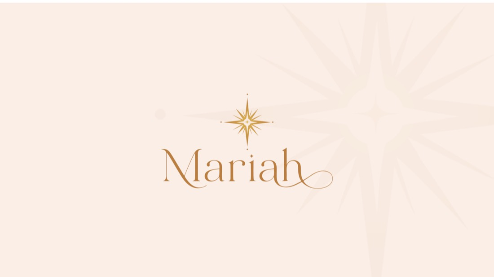

"Mariah — joias que expressam fé, beleza e propósito. Para a mulher que vive sua fé com elegância e gosta de presentear quem ama: peças atemporais em prata 925 e moissanite, com a Estrela de Belém como assinatura — da joia de herança ao presente especial."
Sua rede já aponta o caminho: amigas, servidoras públicas e bancárias — mulher de ~35 a 55 anos, renda estável, católica, que valoriza qualidade durável, presenteia bastante e prefere elegância atemporal a tendência passageira.
Você não precisa escolher entre "só fé" e "gama maior". A fé é a assinatura (a Coleção Fé + a Estrela de Belém, que qualquer mulher usa, religiosa ou não), e ao redor dela vem uma linha elegante ampla. Assim a marca tem alma e variedade.
Sugestão: começar com uma coleção-cápsula curada (uns 15–25 modelos) ancorada na assinatura, em vez dos 3 andares cheios de cara. O andar de R$80 traz cliente; o de R$500+ traz margem. Online primeiro → física e revenda (seletiva, começando pelas colegas) depois.
Responda com sinceridade — não tem certo nem errado. No fim, toque em "Copiar minhas respostas" e cole no WhatsApp do Marcos. A partir daí a gente reprograma tudo na sua voz. 💛